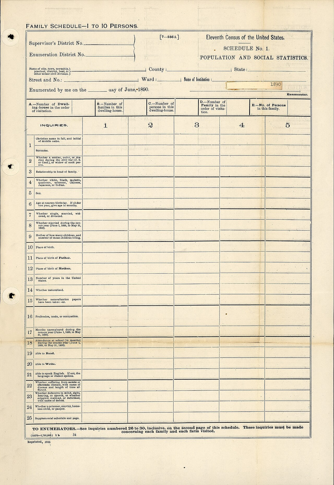
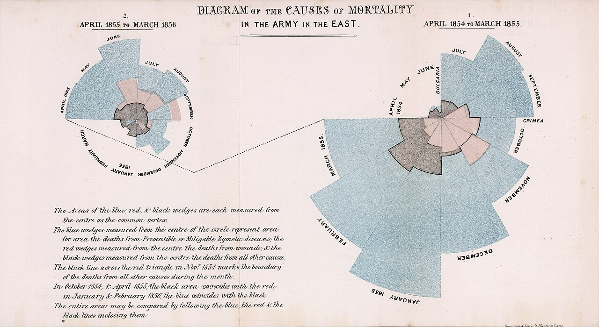

이번 주 시험지
시험지
폴더 탭을 가리키거나 눌러 보세요. 그 사람의 이번 주 기록과 문제 수가 나와요.
출처


한 주는 이렇게
월요일부터 목요일까지 각자 남긴 기록이 금요일에 열 문제가 되고, 제출하면 바로 채점돼요.
이번 주 차례
책등을 누르면 그 문제가 시험지에서 바로 열려요.
폴더 탭을 가리키거나 눌러 보세요. 그 사람의 이번 주 기록과 문제 수가 나와요.


월요일부터 목요일까지 각자 남긴 기록이 금요일에 열 문제가 되고, 제출하면 바로 채점돼요.
책등을 누르면 그 문제가 시험지에서 바로 열려요.